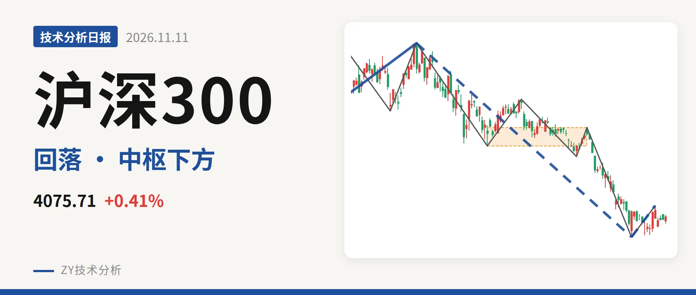

沪深300｜反抽受制4478点中枢下沿

最近日线中枢 4478.21—4583.38点，收盘位于中枢之下
一句话：日线下跌段未结束，反抽不能站回4478点则三卖压力存在
🧭 走势结构：上涨未结束，日线下跌段还在延续
当前6月23日以来的日线下跌线段没有结束，自5064.27点跌至3958.14点，跌约21.8%。更大级别看，2024年2月2日至2026年6月23日的上涨走势尚未走完，目前只是该上涨内部的深幅回落；而2021年2月18日至2024年2月2日的下跌段已经结束。10月23日至11月5日的反弹只有一笔，最高4136.80点，不构成日线线段。因此10月23日低点之后只是反弹，还未改变日线下跌段。日线结构为：更大级别上涨仍在，中级别下跌延续。

📊 中枢与位置：中枢下移，最新价低于下沿约9%
最近一处日线笔中枢在7月30日至9月22日，区间4478.21—4583.38点，尚未完成。2月3日至3月17日的中枢在4578.21—4720.86点，两段中枢高低点均降低，中枢下移。最新收盘4075.71点，低于最近中枢下沿4478.21点约9.0%。价格没有回到中枢内部，说明6月23日以来的下跌已使该中枢被向下破坏，反抽回不到4478点上方前，空头结构未改。
🎯 买卖点：10月23日一买暂守，上方看中枢下沿
日线笔级别最近买点是10月23日一买，点位3958.14点，对应9月22日至10月23日下跌笔，该笔已结束。随后反弹到11月5日最高4136.80点，未触及4478.21点。11月6日至11月11日回落，最低4013.79点，未破3958.14点，一买暂未被破坏。若后面跌破3958点，这个买点就只对应更小级别，不能作为日线下跌结束依据；若守住，则先看对4478点的反抽。

🔍 背驰：价格新低但绿柱未放大，DIF还在新低
关键比较在6月23日至7月30日与9月22日至10月23日两段下跌笔。前者绿柱面积650、DIF低点-66.5；后者价格新低至3958.14点，绿柱面积494、DIF低点-115.1。价格新低但绿柱面积未放大，空头力度没有继续同步增强；DIF低点反而更低，说明下跌动能并未完全衰竭。因此10月23日一买更多是小级别背驰触发，日线背驰确认度不高。反弹笔10月23日至11月5日红柱面积仅39，DIF高点-92.5，反弹动能也偏弱。
📏 关键位置观察：回不到4478点则有日线三卖压力
结构偏弱。上方最近压力看4478点附近，这是最近日线中枢下沿；下方先看3958点附近，即10月23日一买低点。若反抽不能回到4478点上方，结构上构成日线三卖，6月23日以来的下跌段仍有延续风险。若重新站上4478点，并向4583点附近回补，则下跌更可能转为中枢扩展，弱势会先缓解。当前处在“一买反弹后回落、尚未上测中枢下沿”的状态，偏弱但未破位。
⚠️ 本文为基于公开行情数据的缠论技术结构记录，由程序自动计算并生成，仅供学习交流，不构成任何投资建议。市场有风险，投资需谨慎。